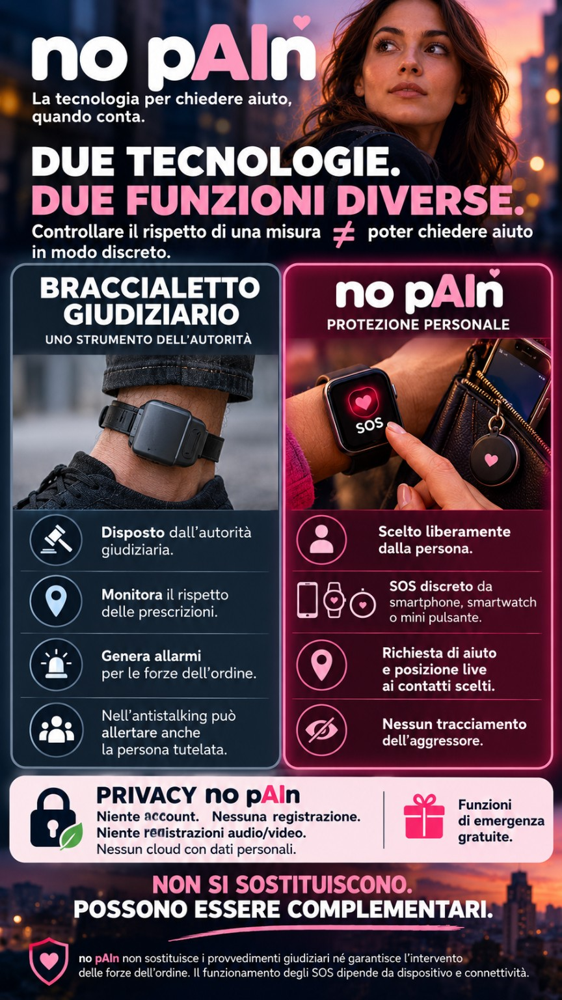
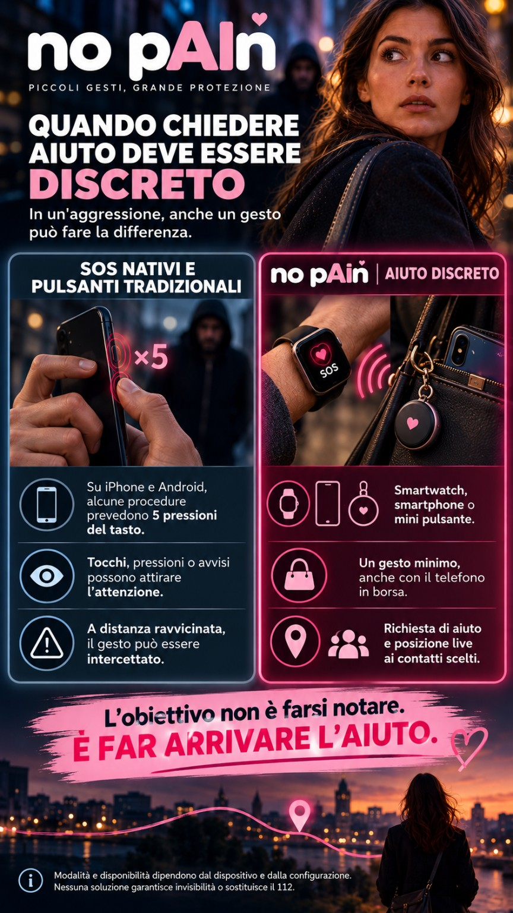
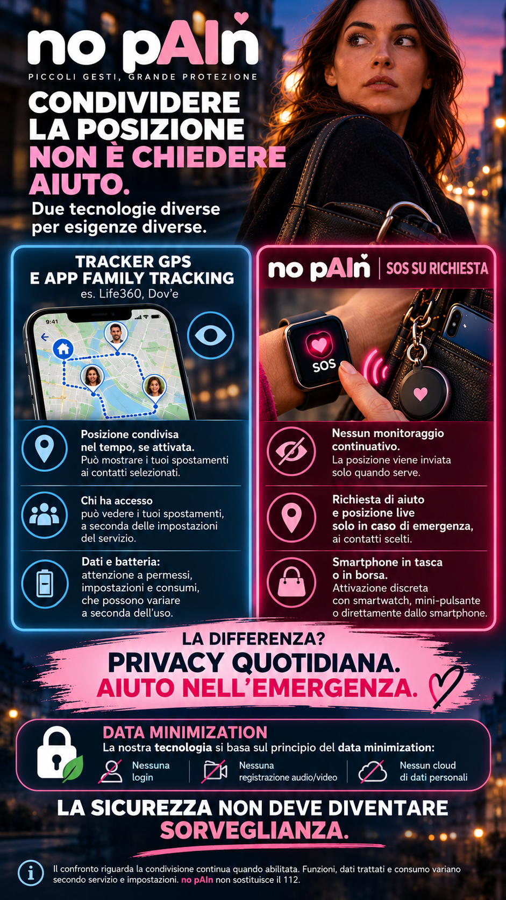
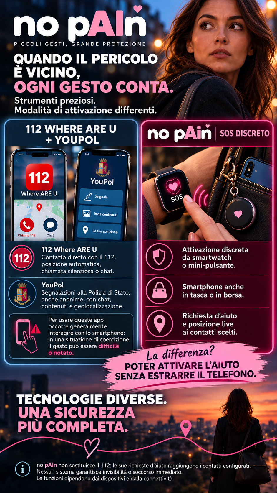
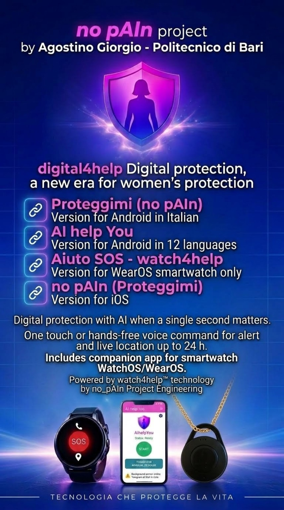

Strumenti diversi. Un obiettivo comune: proteggere.Different tools. One shared goal: protection.Des outils différents. Un objectif commun : protéger.Verschiedene Werkzeuge. Ein gemeinsames Ziel: Schutz.Herramientas diferentes. Un objetivo común: proteger.Farklı araçlar. Ortak hedef: koruma.Διαφορετικά εργαλεία. Ένας κοινός στόχος: η προστασία.Ferramentas diferentes. Um objetivo comum: proteger.Instrumente diferite. Un obiectiv comun: protecția.Różne narzędzia. Jeden cel: ochrona.Verschillende hulpmiddelen. Eén doel: bescherming.Olika verktyg. Ett gemensamt mål: skydd.
Braccialetti giudiziari, SOS nativi, tracker e applicazioni istituzionali hanno finalità specifiche. Scopri in quattro confronti come le tecnologie digital4help™, watch4help™ e button4help™ puntano a rendere più accessibile la richiesta di aiuto in una situazione di pericolo.Judicial ankle monitors, built-in SOS features, trackers and official emergency apps have different roles. These four comparisons explain how digital4help™, watch4help™ and button4help™ make it easier to ask for help when danger is close.Bracelets judiciaires, SOS intégrés, traceurs et applications officielles ont des fonctions distinctes. Ces quatre comparaisons montrent comment digital4help™, watch4help™ et button4help™ facilitent une demande d'aide en cas de danger.Gerichtliche Fußfesseln, integrierte SOS-Funktionen, Tracker und behördliche Apps erfüllen unterschiedliche Aufgaben. Vier Vergleiche zeigen, wie digital4help™, watch4help™ und button4help™ Hilferufe in Gefahrensituationen erleichtern.Las pulseras judiciales, los SOS integrados, los rastreadores y las apps oficiales cumplen funciones distintas. Estas cuatro comparaciones muestran cómo digital4help™, watch4help™ y button4help™ facilitan pedir ayuda ante el peligro.Adli elektronik kelepçeler, yerleşik SOS özellikleri, konum takip cihazları ve resmî uygulamalar farklı amaçlar taşır. Bu dört karşılaştırma, digital4help™, watch4help™ ve button4help™ teknolojilerinin tehlikede yardım istemeyi nasıl kolaylaştırdığını gösterir.Δικαστικά ηλεκτρονικά βραχιολάκια, ενσωματωμένες λειτουργίες SOS, συσκευές εντοπισμού και επίσημες εφαρμογές έχουν διαφορετικό ρόλο. Τέσσερις συγκρίσεις δείχνουν πώς τα digital4help™, watch4help™ και button4help™ διευκολύνουν την αναζήτηση βοήθειας σε κίνδυνο.Pulseiras judiciais, SOS integrados, localizadores e aplicações oficiais têm funções diferentes. Estas quatro comparações mostram como digital4help™, watch4help™ e button4help™ facilitam pedir ajuda em situações de perigo.Brățările judiciare, funcțiile SOS integrate, dispozitivele de urmărire și aplicațiile oficiale au roluri diferite. Cele patru comparații arată cum digital4help™, watch4help™ și button4help™ facilitează solicitarea ajutorului în pericol.Sądowe opaski elektroniczne, wbudowane funkcje SOS, lokalizatory i oficjalne aplikacje mają różne zadania. Cztery porównania pokazują, jak digital4help™, watch4help™ i button4help™ ułatwiają wezwanie pomocy w niebezpieczeństwie.Elektronische enkelbanden, ingebouwde SOS-functies, trackers en officiële apps hebben verschillende taken. Vier vergelijkingen tonen hoe digital4help™, watch4help™ en button4help™ het vragen om hulp bij gevaar vergemakkelijken.Elektroniska fotbojor, inbyggda SOS-funktioner, spårare och officiella appar har olika uppgifter. Fyra jämförelser visar hur digital4help™, watch4help™ och button4help™ gör det lättare att be om hjälp vid fara.
no pAIn™ affianca, non sostituisce, i servizi ufficiali di soccorso. L'obiettivo progettuale è ridurre il tempo necessario ad avviare la richiesta ai contatti di fiducia: nessuna app può garantire l'arrivo immediato dei soccorsi.no pAIn™ complements official emergency services; it does not replace them. The aim is to reduce the time needed to alert trusted contacts. No app can guarantee immediate rescue.no pAIn™ complète les secours officiels, sans les remplacer. Son objectif est de réduire le délai nécessaire pour alerter des proches de confiance. Aucune application ne garantit un secours immédiat.no pAIn™ ergänzt offizielle Notfalldienste, ersetzt sie jedoch nicht. Ziel ist es, Vertrauenspersonen schneller zu alarmieren. Keine App kann sofortige Hilfe garantieren.no pAIn™ complementa los servicios oficiales de emergencia, no los sustituye. Busca reducir el tiempo necesario para alertar a contactos de confianza. Ninguna app garantiza ayuda inmediata.no pAIn™ resmî acil yardım hizmetlerini tamamlar, onların yerini almaz. Amaç, güvenilir kişilere haber verme süresini kısaltmaktır. Hiçbir uygulama anında kurtarma garantisi vermez.Το no pAIn™ συμπληρώνει τις επίσημες υπηρεσίες έκτακτης ανάγκης, δεν τις αντικαθιστά. Στόχος είναι η ταχύτερη ειδοποίηση έμπιστων επαφών. Καμία εφαρμογή δεν εγγυάται άμεση διάσωση.no pAIn™ complementa os serviços oficiais de emergência, não os substitui. O objetivo é reduzir o tempo até alertar contactos de confiança. Nenhuma aplicação garante socorro imediato.no pAIn™ completează serviciile oficiale de urgență, nu le înlocuiește. Scopul este reducerea timpului necesar alertării persoanelor de încredere. Nicio aplicație nu garantează intervenția imediată.no pAIn™ uzupełnia oficjalne służby ratunkowe, ale ich nie zastępuje. Celem jest szybsze powiadomienie zaufanych kontaktów. Żadna aplikacja nie gwarantuje natychmiastowej pomocy.no pAIn™ vult officiële hulpdiensten aan, maar vervangt ze niet. Het doel is vertrouwde personen sneller te waarschuwen. Geen enkele app garandeert onmiddellijke hulp.no pAIn™ kompletterar officiella räddningstjänster, men ersätter dem inte. Syftet är att snabbare varna betrodda kontakter. Ingen app kan garantera omedelbar hjälp.
Braccialetto elettronico e no pAIn™: funzioni complementari.Electronic ankle monitors and no pAIn™: complementary roles.Bracelet électronique et no pAIn™ : des fonctions complémentaires.Elektronische Fußfessel und no pAIn™: ergänzende Funktionen.Pulsera electrónica y no pAIn™: funciones complementarias.Elektronik kelepçe ve no pAIn™: birbirini tamamlayan görevler.Ηλεκτρονικό βραχιολάκι και no pAIn™: συμπληρωματικοί ρόλοι.Pulseira eletrónica e no pAIn™: funções complementares.Brățara electronică și no pAIn™: funcții complementare.Opaska elektroniczna i no pAIn™: uzupełniające się funkcje.Elektronische enkelband en no pAIn™: aanvullende functies.Elektronisk fotboja och no pAIn™: kompletterande funktioner.
Il braccialetto giudiziario serve a controllare il rispetto di prescrizioni disposte dall'autorità. no pAIn™ è invece uno strumento volontario per chiedere aiuto ai contatti scelti dalla persona.A judicial ankle monitor checks compliance with court-imposed restrictions. no pAIn™ is a voluntary tool for alerting the people you trust.Le bracelet judiciaire contrôle le respect des restrictions imposées par la justice. no pAIn™ permet de demander volontairement de l'aide à ses contacts de confiance.Eine gerichtliche Fußfessel überwacht die Einhaltung richterlicher Auflagen. no pAIn™ ist ein freiwilliges Mittel, um Vertrauenspersonen um Hilfe zu bitten.La pulsera judicial vigila el cumplimiento de restricciones ordenadas por un juez. no pAIn™ permite solicitar ayuda voluntariamente a contactos elegidos.Adli kelepçe, mahkemenin koyduğu kısıtlamalara uyulmasını denetler. no pAIn™, kişinin seçtiği yakınlarından gönüllü olarak yardım istemesini sağlar.Το δικαστικό βραχιολάκι ελέγχει την τήρηση περιορισμών που επέβαλε το δικαστήριο. Το no pAIn™ επιτρέπει την εθελοντική αναζήτηση βοήθειας από επιλεγμένες επαφές.A pulseira judicial verifica o cumprimento de restrições impostas pela justiça. no pAIn™ permite pedir ajuda voluntariamente a contactos escolhidos.Brățara judiciară monitorizează respectarea restricțiilor impuse de instanță. no pAIn™ permite solicitarea voluntară a ajutorului de la contactele alese.Opaska sądowa monitoruje przestrzeganie ograniczeń nałożonych przez sąd. no pAIn™ pozwala dobrowolnie prosić wybrane osoby o pomoc.Een gerechtelijke enkelband controleert de naleving van opgelegde beperkingen. no pAIn™ is een vrijwillig hulpmiddel om vertrouwde contacten om hulp te vragen.En rättslig fotboja kontrollerar att domstolens begränsningar följs. no pAIn™ är ett frivilligt sätt att be valda personer om hjälp.


Chi controlla, chi chiede aiuto?Who monitors, and who asks for help?Qui surveille ? Qui demande de l'aide ?Wer überwacht, wer bittet um Hilfe?¿Quién vigila y quién pide ayuda?Kim izler, kim yardım ister?Ποιος επιτηρεί και ποιος ζητά βοήθεια;Quem vigia e quem pede ajuda?Cine monitorizează și cine cere ajutor?Kto monitoruje, a kto prosi o pomoc?Wie controleert en wie vraagt hulp?Vem övervakar och vem ber om hjälp?
- Braccialetto giudiziario: misura disposta dall'autorità e orientata al monitoraggio di prescrizioni e divieti. Nei sistemi antistalking può generare segnalazioni alle forze dell'ordine e alla persona tutelata.Judicial ankle monitor: court-ordered monitoring of restrictions and exclusion zones. Anti-stalking systems may warn police and the protected person.Bracelet judiciaire : surveillance imposée par un juge pour vérifier des restrictions. Dans les dispositifs antiharcèlement, la police et la personne protégée peuvent être alertées.Gerichtliche Fußfessel: gerichtlich angeordnete Überwachung von Auflagen. Bei Anti-Stalking-Systemen können Polizei und geschützte Person alarmiert werden.Pulsera judicial: supervisión de restricciones impuestas por la autoridad. En sistemas contra el acoso puede alertar a la policía y a la persona protegida.Adli kelepçe: mahkeme kararıyla kısıtlamaların denetlenmesi. Tacizi önleme sistemleri polisi ve korunan kişiyi uyarabilir.Δικαστικό βραχιολάκι: δικαστικά επιβεβλημένη επιτήρηση περιορισμών. Συστήματα κατά της παρενόχλησης μπορούν να ειδοποιούν την αστυνομία και το προστατευόμενο άτομο.Pulseira judicial: monitorização ordenada pela autoridade para verificar restrições. Sistemas antiperseguição podem alertar a polícia e a pessoa protegida.Brățara judiciară: monitorizare dispusă de autorități pentru respectarea restricțiilor. Sistemele anti-hărțuire pot alerta poliția și persoana protejată.Opaska sądowa: nadzór zarządzony przez sąd nad przestrzeganiem ograniczeń. Systemy przeciwdziałania stalkingowi mogą ostrzegać policję i chronioną osobę.Gerechtelijke enkelband: door de rechter opgelegd toezicht op beperkingen. Antistalkingsystemen kunnen politie en beschermde personen waarschuwen.Elektronisk fotboja: domstolsbeslutad övervakning av begränsningar. System mot stalkning kan varna polisen och den skyddade personen.
- no pAIn™: attivazione volontaria di una richiesta SOS tramite funzioni disponibili su smartphone, smartwatch o mini-pulsante compatibile.no pAIn™: voluntarily start an SOS from a compatible phone, smartwatch or mini button.no pAIn™ : déclenchement volontaire d'un SOS depuis un téléphone, une montre ou un mini-bouton compatible.no pAIn™: freiwilliger SOS-Start über kompatibles Smartphone, Smartwatch oder Mini-Taster.no pAIn™: activación voluntaria de SOS desde un teléfono, reloj o minibotón compatible.no pAIn™: uyumlu telefon, akıllı saat veya küçük düğmeyle gönüllü SOS başlatma.no pAIn™: εθελοντική ενεργοποίηση SOS από συμβατό κινητό, έξυπνο ρολόι ή μικρό κουμπί.no pAIn™: ativação voluntária de SOS através de telemóvel, relógio ou minibotão compatível.no pAIn™: activare voluntară SOS de pe telefon, ceas inteligent sau minibuton compatibil.no pAIn™: dobrowolne uruchomienie SOS przez zgodny telefon, smartwatch lub mały przycisk.no pAIn™: vrijwillige SOS-activering via een geschikte telefoon, smartwatch of miniknop.no pAIn™: frivillig SOS-aktivering via kompatibel mobil, smartklocka eller miniknapp.
- Destinatari diversi: no pAIn™ avvisa i contatti personali configurati; non controlla la persona sottoposta alla misura e non sostituisce il monitoraggio giudiziario.Different recipients: no pAIn™ alerts your chosen contacts. It neither monitors the restricted person nor replaces judicial supervision.Destinataires différents : no pAIn™ prévient les contacts choisis et ne remplace pas le contrôle judiciaire.Andere Empfänger: no pAIn™ alarmiert gewählte Kontakte und ersetzt keine gerichtliche Überwachung.Destinatarios diferentes: no pAIn™ avisa a contactos elegidos; no sustituye la vigilancia judicial.Farklı alıcılar: no pAIn™ seçilen kişileri uyarır; adli denetimin yerini almaz.Διαφορετικοί παραλήπτες: το no pAIn™ ειδοποιεί επιλεγμένες επαφές και δεν αντικαθιστά τη δικαστική επιτήρηση.Destinatários diferentes: no pAIn™ avisa os contactos escolhidos e não substitui a vigilância judicial.Destinatari diferiți: no pAIn™ anunță contactele alese și nu înlocuiește supravegherea judiciară.Różni odbiorcy: no pAIn™ powiadamia wybrane kontakty i nie zastępuje nadzoru sądowego.Andere ontvangers: no pAIn™ waarschuwt gekozen contacten en vervangt geen gerechtelijk toezicht.Olika mottagare: no pAIn™ meddelar valda kontakter och ersätter inte rättslig övervakning.
- Complementarità: chi riceve l'avviso può contattare il 112, trasmettendo informazioni e posizione ricevute.Working together: recipients can call 112 and share the information and location received.Complémentarité : les destinataires peuvent appeler le 112 et transmettre les informations et la position reçues.Zusammenspiel: Empfänger können die 112 anrufen und Standort sowie Informationen weitergeben.Complementariedad: quienes reciben el aviso pueden llamar al 112 y compartir ubicación e información.Birlikte kullanım: uyarıyı alanlar 112'yi arayıp konum ve bilgileri iletebilir.Συνεργασία: οι παραλήπτες μπορούν να καλέσουν το 112 και να μεταφέρουν πληροφορίες και τοποθεσία.Complementaridade: os destinatários podem ligar para o 112 e transmitir informação e localização.Complementaritate: destinatarii pot apela 112 și transmite informațiile și locația primite.Współdziałanie: odbiorcy mogą zadzwonić pod 112, przekazując otrzymane informacje i lokalizację.Samenwerking: ontvangers kunnen 112 bellen en informatie en locatie doorgeven.Samverkan: mottagarna kan ringa 112 och vidarebefordra uppgifter och position.
Un braccialetto non impedisce fisicamente un'aggressione; allo stesso modo un SOS non garantisce il soccorso. Sono strumenti con ruoli diversi.An ankle monitor cannot physically prevent assault, and an SOS cannot guarantee rescue. Their purposes are different.Un bracelet ne peut empêcher physiquement une agression ; un SOS ne garantit pas non plus l'arrivée des secours. Leurs rôles sont distincts.Eine Fußfessel verhindert keinen Angriff; ein SOS garantiert keine Rettung. Die Aufgaben unterscheiden sich.La pulsera no impide físicamente una agresión, ni un SOS garantiza el rescate. Cumplen funciones distintas.Kelepçe saldırıyı fiziksel olarak önleyemez; SOS da kurtarmayı garanti etmez. Amaçları farklıdır.Το βραχιολάκι δεν εμποδίζει σωματικά μια επίθεση, ούτε ένα SOS εγγυάται διάσωση. Οι ρόλοι είναι διαφορετικοί.Uma pulseira não impede fisicamente uma agressão, e um SOS não garante salvamento. São funções distintas.Brățara nu poate împiedica fizic o agresiune, iar un SOS nu garantează salvarea. Au scopuri diferite.Opaska nie powstrzyma fizycznie napaści, a SOS nie gwarantuje ratunku. Ich role są różne.Een enkelband kan een aanval niet fysiek voorkomen en een SOS garandeert geen redding. De functies verschillen.En fotboja stoppar inte fysiskt ett överfall, och SOS garanterar inte räddning. Verktygen har olika roller.
SOS nativi e no pAIn™: più modalità di attivazione.Built-in SOS and no pAIn™: more ways to trigger help.SOS intégrés et no pAIn™ : davantage de déclencheurs.Integrierte SOS-Funktionen und no pAIn™: mehr Auslösemöglichkeiten.SOS integrados y no pAIn™: más formas de activar la alerta.Yerleşik SOS ve no pAIn™: daha fazla tetikleme yolu.Ενσωματωμένο SOS και no pAIn™: περισσότεροι τρόποι ενεργοποίησης.SOS integrados e no pAIn™: mais formas de ativação.SOS integrat și no pAIn™: mai multe modalități de activare.Wbudowane SOS i no pAIn™: więcej sposobów aktywacji.Ingebouwde SOS en no pAIn™: meer manieren om hulp te activeren.Inbyggda SOS och no pAIn™: fler sätt att starta ett larm.
Le funzioni SOS di iPhone, Android e smartwatch sono preziose e possono contattare direttamente i servizi di emergenza. Una procedura che richiede di manipolare un dispositivo può però essere difficile sotto coercizione.SOS features on iPhone, Android and watches can contact emergency services directly. But handling a device may be difficult when someone is threatening you.Les SOS d'iPhone, d'Android et des montres peuvent joindre directement les secours. Manipuler un appareil peut toutefois être difficile sous la menace.SOS-Funktionen von iPhone, Android und Smartwatches können Rettungsdienste direkt kontaktieren. Unter Bedrohung kann die Bedienung eines Geräts jedoch schwierig sein.Los SOS de iPhone, Android y relojes pueden contactar directamente a emergencias. Manipular el dispositivo puede ser difícil ante una amenaza.iPhone, Android ve saatlerdeki SOS işlevleri acil servislere doğrudan ulaşabilir. Ancak tehdit altında cihazı kullanmak zor olabilir.Οι λειτουργίες SOS σε iPhone, Android και ρολόγια μπορούν να επικοινωνήσουν απευθείας με τις υπηρεσίες έκτακτης ανάγκης. Υπό απειλή όμως ο χειρισμός της συσκευής μπορεί να είναι δύσκολος.Os SOS de iPhone, Android e relógios podem contactar diretamente os serviços de emergência. Manipular o aparelho pode ser difícil sob ameaça.SOS-ul de pe iPhone, Android sau ceasuri poate contacta direct serviciile de urgență. Manipularea dispozitivului poate fi dificilă sub amenințare.Funkcje SOS w iPhone, Androidzie i zegarkach mogą kontaktować się bezpośrednio ze służbami. Pod groźbą użycie urządzenia może jednak być trudne.SOS-functies op iPhone, Android en smartwatches kunnen hulpdiensten rechtstreeks bellen. Onder dreiging kan een toestel bedienen echter moeilijk zijn.SOS på iPhone, Android och klockor kan kontakta räddningstjänsten direkt. Att hantera en enhet kan dock vara svårt under hot.


Quando un secondo contaWhen every second mattersQuand chaque seconde compteWenn jede Sekunde zähltCuando cada segundo cuentaHer saniye önemli olduğundaΌταν κάθε δευτερόλεπτο μετράειQuando cada segundo contaCând fiecare secundă conteazăKiedy liczy się każda sekundaWanneer elke seconde teltNär varje sekund räknas
La famiglia no pAIn™ prevede, a seconda dell'app, del dispositivo e della configurazione, sei punti di innesco:Depending on the app, device and settings, no pAIn™ offers six ways to activate an alert:Selon l'application, l'appareil et les réglages, no pAIn™ propose six moyens de déclencher l'alerte :Je nach App, Gerät und Einstellungen bietet no pAIn™ sechs Möglichkeiten zum Auslösen:Según la app, el dispositivo y sus ajustes, no pAIn™ ofrece seis formas de activación:Uygulamaya, cihaza ve ayarlara göre no pAIn™ altı farklı tetikleme yöntemi sunar:Ανάλογα με την εφαρμογή, τη συσκευή και τις ρυθμίσεις, το no pAIn™ προσφέρει έξι τρόπους ενεργοποίησης:Consoante a aplicação, o dispositivo e as definições, no pAIn™ oferece seis formas de ativação:În funcție de aplicație, dispozitiv și setări, no pAIn™ oferă șase modalități de declanșare:Zależnie od aplikacji, urządzenia i ustawień no pAIn™ oferuje sześć sposobów uruchomienia alarmu:Afhankelijk van app, toestel en instellingen biedt no pAIn™ zes manieren om alarm te slaan:Beroende på app, enhet och inställningar erbjuder no pAIn™ sex sätt att utlösa larm:
- Comando vocaleVoice commandCommande vocaleSprachbefehlComando de vozSesli komutΦωνητική εντολήComando de vozComandă vocalăPolecenie głosoweSpraakopdrachtRöstkommando
- Smartwatch con watch4help™Smartwatch with watch4help™Montre avec watch4help™Smartwatch mit watch4help™Reloj con watch4help™watch4help™ özellikli akıllı saatΈξυπνο ρολόι με watch4help™Relógio com watch4help™Ceas cu watch4help™Smartwatch z watch4help™Smartwatch met watch4help™Smartklocka med watch4help™
- Mini-pulsante con button4help™Mini button with button4help™Mini-bouton avec button4help™Mini-Taster mit button4help™Minibotón con button4help™button4help™ mini düğmesiΜικρό κουμπί με button4help™Minibotão com button4help™Minibuton cu button4help™Miniprzycisk z button4help™Miniknop met button4help™Miniknapp med button4help™
- Notifica di emergenzaEmergency notificationNotification d'urgenceNotfallbenachrichtigungNotificación de emergenciaAcil durum bildirimiΕιδοποίηση έκτακτης ανάγκηςNotificação de emergênciaNotificare de urgențăPowiadomienie alarmoweNoodmeldingNödavisering
- Pulsante rapido sulla schermata HomeHome-screen quick buttonBouton rapide sur l'écran d'accueilSchnelltaste auf dem StartbildschirmBotón rápido en la pantalla de inicioAna ekranda hızlı düğmeΓρήγορο κουμπί στην αρχική οθόνηBotão rápido no ecrã inicialButon rapid pe ecranul principalSzybki przycisk na ekranie głównymSnelknop op het startschermSnabbknapp på hemskärmen
- Pulsante SOS nella schermata dell'appSOS button inside the appBouton SOS dans l'applicationSOS-Taste in der AppBotón SOS dentro de la appUygulama içindeki SOS düğmesiΚουμπί SOS μέσα στην εφαρμογήBotão SOS dentro da aplicaçãoButon SOS în aplicațiePrzycisk SOS w aplikacjiSOS-knop in de appSOS-knapp inne i appen
L'app può non essere in primo piano e, con le modalità e i permessi previsti, l'avvio può avvenire anche a schermo spento. Non tutte le sei modalità sono disponibili su ogni versione o sistema operativo.The app need not be in the foreground; supported triggers may work even with the screen off, subject to permissions. Not every feature is available on every platform.L'application peut rester en arrière-plan ; certains déclencheurs fonctionnent écran éteint, selon les autorisations. Toutes les fonctions ne sont pas disponibles sur chaque plateforme.Die App muss nicht im Vordergrund sein; unterstützte Funktionen arbeiten mit entsprechenden Berechtigungen auch bei ausgeschaltetem Bildschirm. Nicht jede Funktion ist überall verfügbar.La app no tiene que estar en primer plano; ciertos métodos pueden funcionar con la pantalla apagada y los permisos adecuados. No todas las funciones están disponibles en cada plataforma.Uygulama ön planda olmak zorunda değildir; gerekli izinlerle bazı yöntemler ekran kapalıyken de çalışır. Her işlev her platformda bulunmaz.Η εφαρμογή δεν χρειάζεται να βρίσκεται στο προσκήνιο· ορισμένες επιλογές λειτουργούν με κλειστή οθόνη και κατάλληλες άδειες. Δεν είναι όλες οι δυνατότητες διαθέσιμες σε κάθε πλατφόρμα.A aplicação pode estar em segundo plano; alguns métodos funcionam com o ecrã desligado e as permissões adequadas. Nem todas as funções estão disponíveis em cada plataforma.Aplicația poate rula în fundal; unele metode funcționează cu ecranul stins, dacă există permisiunile necesare. Nu toate funcțiile sunt disponibile pe fiecare platformă.Aplikacja nie musi być na pierwszym planie; niektóre metody działają przy wyłączonym ekranie i odpowiednich uprawnieniach. Nie wszystkie funkcje są dostępne na każdej platformie.De app hoeft niet op de voorgrond te staan; sommige methoden werken ook met een uitgeschakeld scherm en de juiste machtigingen. Niet alle functies zijn overal beschikbaar.Appen behöver inte vara i förgrunden; vissa sätt fungerar med släckt skärm och rätt behörigheter. Alla funktioner finns inte på varje plattform.
I sistemi SOS nativi mantengono un vantaggio specifico: possono chiamare direttamente i soccorsi. La compatibilità di no pAIn™ dipende dal dispositivo, dalla connettività e dalle impostazioni.Built-in SOS systems can call emergency services directly. no pAIn™ compatibility depends on your device, connection and settings.Les SOS intégrés peuvent appeler les secours directement. La compatibilité de no pAIn™ dépend de l'appareil, de la connexion et des réglages.Integrierte SOS-Systeme können Rettungsdienste direkt anrufen. no pAIn™ hängt von Gerät, Verbindung und Einstellungen ab.Los SOS integrados pueden llamar a emergencias directamente. no pAIn™ depende del dispositivo, la conexión y los ajustes.Yerleşik SOS doğrudan acil servisi arayabilir. no pAIn™ uyumluluğu cihaza, bağlantıya ve ayarlara bağlıdır.Τα ενσωματωμένα SOS μπορούν να καλούν απευθείας τις υπηρεσίες έκτακτης ανάγκης. Η συμβατότητα του no pAIn™ εξαρτάται από συσκευή, σύνδεση και ρυθμίσεις.Os SOS integrados podem ligar diretamente para os serviços de emergência. no pAIn™ depende do dispositivo, da ligação e das definições.SOS-ul integrat poate suna direct la urgențe. Compatibilitatea no pAIn™ depinde de dispozitiv, conexiune și setări.Wbudowane SOS może dzwonić bezpośrednio do służb. no pAIn™ zależy od urządzenia, połączenia i ustawień.Ingebouwde SOS kan hulpdiensten rechtstreeks bellen. no pAIn™ hangt af van toestel, verbinding en instellingen.Inbyggda SOS-system kan ringa räddningstjänsten direkt. no pAIn™ beror på enhet, anslutning och inställningar.
Tracker GPS, AirTag e no pAIn™: localizzare non significa chiedere aiuto.GPS trackers, AirTag and no pAIn™: sharing a location is not asking for help.Traceurs GPS, AirTag et no pAIn™ : se localiser n'est pas demander de l'aide.GPS-Tracker, AirTag und no pAIn™: Standort teilen heißt nicht Hilfe rufen.Rastreadores GPS, AirTag y no pAIn™: localizar no es pedir ayuda.GPS takip cihazları, AirTag ve no pAIn™: konum paylaşmak yardım istemek değildir.Συσκευές GPS, AirTag και no pAIn™: η τοποθεσία δεν είναι αίτημα βοήθειας.Localizadores GPS, AirTag e no pAIn™: localizar não é pedir ajuda.Trackere GPS, AirTag și no pAIn™: localizarea nu înseamnă cerere de ajutor.Lokalizatory GPS, AirTag i no pAIn™: udostępnienie lokalizacji to nie wezwanie pomocy.GPS-trackers, AirTag en no pAIn™: een locatie delen is niet om hulp vragen.GPS-spårare, AirTag och no pAIn™: att dela plats är inte att be om hjälp.
I localizzatori per oggetti e le app di condivisione familiare rispondono a bisogni reali. no pAIn™ privilegia invece l'invio della posizione collegato all'attivazione volontaria di un'emergenza.Object trackers and family location apps serve useful purposes. no pAIn™ instead links location sharing to a deliberate emergency alert.Les traceurs d'objets et les applications familiales sont utiles. no pAIn™ privilégie le partage de position lié à une alerte volontaire.Objekt-Tracker und Familienortungs-Apps sind nützlich. no pAIn™ verknüpft Standortfreigabe dagegen mit einem bewusst ausgelösten Notruf an Kontakte.Los rastreadores de objetos y las apps familiares son útiles. no pAIn™ prioriza compartir la ubicación al activar voluntariamente una emergencia.Eşya takip cihazları ve aile konum uygulamaları faydalıdır. no pAIn™ ise konum paylaşımını gönüllü acil yardım çağrısına bağlar.Οι εντοπιστές αντικειμένων και οι οικογενειακές εφαρμογές είναι χρήσιμες. Το no pAIn™ συνδέει την κοινοποίηση τοποθεσίας με εκούσια ειδοποίηση έκτακτης ανάγκης.Localizadores de objetos e aplicações familiares são úteis. no pAIn™ privilegia a partilha de localização associada a um pedido voluntário de ajuda.Trackerele pentru obiecte și aplicațiile familiale sunt utile. no pAIn™ leagă partajarea locației de o alertă voluntară de urgență.Lokalizatory przedmiotów i rodzinne aplikacje lokalizacyjne są użyteczne. no pAIn™ łączy udostępnianie pozycji z dobrowolnym alarmem.Voorwerpentrackers en familie-apps zijn nuttig. no pAIn™ koppelt het delen van locaties aan een bewust geactiveerd noodalarm.Sakspårare och familjeappar är användbara. no pAIn™ kopplar i stället platsdelning till ett frivilligt nödlarm.


Privacy quotidiana e aiuto su richiestaEveryday privacy and help on demandVie privée au quotidien, aide sur demandePrivatsphäre im Alltag, Hilfe nach BedarfPrivacidad diaria y ayuda cuando se necesitaGünlük gizlilik, gerektiğinde yardımΙδιωτικότητα καθημερινά, βοήθεια όταν χρειάζεταιPrivacidade diária e ajuda quando é precisoViață privată zilnică și ajutor la nevoiePrywatność na co dzień, pomoc na żądaniePrivacy in het dagelijks leven, hulp op verzoekVardagsintegritet och hjälp vid behov
- AirTag: è un accessorio per ritrovare oggetti, non un pulsante SOS personale.AirTag: helps locate belongings; it is not a personal SOS button.AirTag : sert à retrouver des objets, pas à lancer un SOS personnel.AirTag: findet Gegenstände; er ist kein persönlicher SOS-Knopf.AirTag: sirve para encontrar objetos, no para enviar un SOS personal.AirTag: eşyaları bulmak içindir; kişisel SOS düğmesi değildir.AirTag: βοηθά στην εύρεση αντικειμένων, δεν είναι προσωπικό κουμπί SOS.AirTag: ajuda a encontrar objetos; não é um botão SOS pessoal.AirTag: ajută la găsirea obiectelor; nu este un buton SOS personal.AirTag: służy do znajdowania przedmiotów, nie jest osobistym przyciskiem SOS.AirTag: helpt spullen terugvinden; het is geen persoonlijke SOS-knop.AirTag: hjälper dig hitta saker; det är ingen personlig SOS-knapp.
- App Family Tracking: possono condividere la posizione nel tempo; alcune integrano anche funzioni SOS. Frequenza, memorizzazione, accessi e consumi dipendono dal prodotto e dalle impostazioni.Family tracking apps: may share location over time, and some include SOS. Storage, access, frequency and battery use vary by service and settings.Applications de suivi familial : elles peuvent partager la position en continu ; certaines proposent un SOS. Stockage, accès et consommation varient selon les réglages.Familienortungs-Apps: können Standorte über längere Zeit teilen; manche bieten SOS. Speicherung, Zugriffe und Energiebedarf hängen von Dienst und Einstellungen ab.Apps de seguimiento familiar: pueden compartir la ubicación durante largos períodos; algunas incluyen SOS. Almacenamiento, accesos y consumo varían según el servicio y sus ajustes.Aile takip uygulamaları: uzun süre konum paylaşabilir; bazılarında SOS vardır. Kayıt, erişim ve pil tüketimi hizmete ve ayarlara göre değişir.Εφαρμογές οικογενειακής παρακολούθησης: μπορούν να μοιράζονται τοποθεσία διαρκώς· κάποιες έχουν και SOS. Αποθήκευση, πρόσβαση και κατανάλωση εξαρτώνται από την υπηρεσία.Aplicações de localização familiar: podem partilhar localização ao longo do tempo; algumas incluem SOS. Armazenamento, acessos e consumo variam conforme o serviço e as definições.Aplicații de urmărire familială: pot partaja locația în timp; unele includ SOS. Stocarea, accesul și consumul diferă în funcție de serviciu și setări.Aplikacje rodzinne: mogą długo udostępniać pozycję, a niektóre mają SOS. Zapisywanie danych, dostęp i zużycie baterii zależą od usługi i ustawień.Apps voor gezinslocatie: kunnen langdurig locaties delen; sommige bieden SOS. Opslag, toegang en batterijgebruik verschillen per dienst en instelling.Appar för familjespårning: kan dela plats över tid och vissa har SOS. Lagring, åtkomst och batteriförbrukning varierar beroende på tjänst och inställningar.
- Rischio di controllo: la condivisione continuativa, se imposta o accessibile a una persona abusante, può diventare uno strumento di sorveglianza.Risk of surveillance: continuous sharing can enable abusive monitoring if imposed or accessed by an aggressor.Risque de surveillance : le partage continu peut servir au contrôle abusif s'il est imposé ou accessible à un agresseur.Überwachungsrisiko: dauerhafte Freigabe kann bei Zwang oder Missbrauch zur Kontrolle genutzt werden.Riesgo de vigilancia: compartir continuamente la ubicación puede facilitar el control abusivo si se impone o se accede sin permiso.Gözetim riski: sürekli paylaşım, zorla uygulanırsa veya saldırgan tarafından erişilirse kötüye kullanılabilir.Κίνδυνος επιτήρησης: η συνεχής κοινοποίηση μπορεί να διευκολύνει καταχρηστικό έλεγχο αν επιβάλλεται ή είναι προσβάσιμη σε δράστη.Risco de vigilância: a partilha permanente pode permitir controlo abusivo se for imposta ou acedida por um agressor.Risc de supraveghere: partajarea continuă poate permite controlul abuziv dacă este impusă sau accesată de un agresor.Ryzyko nadzoru: stałe udostępnianie może umożliwiać przemocową kontrolę, gdy jest wymuszone lub dostępne sprawcy.Risico van toezicht: voortdurend delen kan misbruikt worden voor controle als het wordt opgelegd of door een dader wordt ingezien.Risk för övervakning: ständig delning kan möjliggöra kontroll om den påtvingas eller blir tillgänglig för en förövare.
- no pAIn™: la posizione si condivide con i contatti prescelti in relazione alla richiesta di aiuto e secondo la durata prevista dall'app.no pAIn™: shares location with chosen contacts when you request help, for the duration supported by the app.no pAIn™ : partage la position avec les contacts choisis lors d'une demande d'aide, pour la durée prévue par l'application.no pAIn™: teilt den Standort bei einer Hilfeanforderung mit ausgewählten Kontakten für die vorgesehene Dauer.no pAIn™: comparte la ubicación con contactos elegidos al pedir ayuda, durante el período previsto por la app.no pAIn™: yardım istendiğinde seçilen kişilere uygulamanın belirlediği süre boyunca konum gönderir.no pAIn™: κοινοποιεί τοποθεσία σε επιλεγμένες επαφές όταν ζητείται βοήθεια, για το διάστημα που ορίζει η εφαρμογή.no pAIn™: partilha a localização com os contactos escolhidos ao pedir ajuda, durante o período previsto na aplicação.no pAIn™: partajează locația cu persoanele alese când este solicitat ajutorul, pentru durata oferită de aplicație.no pAIn™: udostępnia pozycję wybranym osobom po prośbie o pomoc, przez czas przewidziany w aplikacji.no pAIn™: deelt de locatie bij een hulpvraag met gekozen contacten, gedurende de ondersteunde periode.no pAIn™: delar plats med valda kontakter när du ber om hjälp, under den tid som appen stöder.
Non tutti i tracker usano gli stessi sistemi cloud, né consumano la stessa quantità di batteria. La tutela della privacy dipende dall'uso concreto e dalla configurazione.Trackers do not all use the same cloud systems or battery power. Privacy depends on the service, configuration and use.Tous les traceurs n'utilisent pas le même cloud ni la même batterie. La confidentialité dépend du service et de son utilisation.Tracker unterscheiden sich bei Cloud-Technik und Akkuverbrauch. Datenschutz hängt vom Dienst und seiner Nutzung ab.Los rastreadores difieren en nube y consumo de batería. La privacidad depende del servicio y de su configuración.Tüm takip cihazları aynı bulutu kullanmaz veya aynı pil tüketimine sahip değildir. Gizlilik kullanım ve ayarlara bağlıdır.Οι εντοπιστές διαφέρουν ως προς το cloud και την μπαταρία. Η ιδιωτικότητα εξαρτάται από την υπηρεσία και τη χρήση της.Os localizadores diferem nos sistemas de nuvem e no consumo de bateria. A privacidade depende do serviço e da utilização.Trackerele nu folosesc toate același cloud sau aceeași cantitate de baterie. Confidențialitatea depinde de serviciu și utilizare.Lokalizatory różnią się rozwiązaniami chmurowymi i zużyciem baterii. Prywatność zależy od usługi, konfiguracji i użycia.Trackers gebruiken niet allemaal dezelfde cloud of evenveel batterij. Privacy hangt af van dienst, instellingen en gebruik.Spårare använder olika molnlösningar och batterimängd. Integritet beror på tjänst, inställningar och användning.
112 Where ARE U, YouPol e no pAIn™: insieme, non in alternativa.112 Where ARE U, YouPol and no pAIn™: together, not as alternatives.112 Where ARE U, YouPol et no pAIn™ : ensemble, pas en concurrence.112 Where ARE U, YouPol und no pAIn™: gemeinsam statt gegeneinander.112 Where ARE U, YouPol y no pAIn™: juntos, no como alternativas.112 Where ARE U, YouPol ve no pAIn™: alternatif değil, birlikte.112 Where ARE U, YouPol και no pAIn™: μαζί, όχι εναλλακτικά.112 Where ARE U, YouPol e no pAIn™: juntos, não em alternativa.112 Where ARE U, YouPol și no pAIn™: împreună, nu alternativ.112 Where ARE U, YouPol i no pAIn™: razem, nie zamiast siebie.112 Where ARE U, YouPol en no pAIn™: samen, niet in plaats van elkaar.112 Where ARE U, YouPol och no pAIn™: tillsammans, inte som alternativ.
Le applicazioni istituzionali sono strumenti fondamentali per accedere ai servizi pubblici. no pAIn™ aggiunge una via per allertare discretamente i propri contatti, che possono a loro volta chiamare i soccorsi.Official emergency apps provide essential access to public services. no pAIn™ offers another discreet way to alert contacts, who can then call for help.Les applications officielles donnent accès aux services publics essentiels. no pAIn™ ajoute un moyen discret d'alerter ses proches, qui peuvent ensuite appeler les secours.Behördliche Apps bieten wichtigen Zugang zu öffentlichen Notdiensten. no pAIn™ ermöglicht zusätzlich die diskrete Benachrichtigung von Kontakten, die Hilfe rufen können.Las apps oficiales ofrecen acceso esencial a los servicios públicos. no pAIn™ añade una vía discreta para avisar a contactos que pueden pedir ayuda.Resmî uygulamalar kamu acil yardım hizmetlerine erişim sağlar. no pAIn™, gerektiğinde yardım çağırabilecek kişileri sessizce uyarmanın ek bir yoludur.Οι επίσημες εφαρμογές δίνουν κρίσιμη πρόσβαση στις δημόσιες υπηρεσίες. Το no pAIn™ προσθέτει έναν διακριτικό τρόπο ειδοποίησης επαφών που μπορούν να ζητήσουν βοήθεια.As aplicações oficiais dão acesso essencial aos serviços públicos. no pAIn™ acrescenta um meio discreto de alertar contactos que podem pedir socorro.Aplicațiile oficiale asigură acces important la serviciile publice. no pAIn™ oferă suplimentar o cale discretă de a alerta contactele, care pot chema ajutor.Oficjalne aplikacje zapewniają niezbędny dostęp do służb. no pAIn™ daje dodatkowy, dyskretny sposób powiadomienia kontaktów, które mogą wezwać pomoc.Officiële apps bieden belangrijke toegang tot hulpdiensten. no pAIn™ biedt daarnaast een discrete manier om contacten te waarschuwen die hulp kunnen inschakelen.Officiella appar ger viktig tillgång till offentliga tjänster. no pAIn™ ger ytterligare ett diskret sätt att varna kontakter som kan tillkalla hjälp.


La differenza è nel destinatarioThe key difference: who receives the alert?La différence : qui reçoit l'alerte ?Der Unterschied: Wer wird alarmiert?La diferencia está en quién recibe el avisoÖnemli fark: Uyarıyı kim alır?Η διαφορά: ποιος λαμβάνει την ειδοποίηση;A diferença está em quem recebe o alertaDiferența: cine primește alerta?Różnica: kto otrzymuje alarm?Het verschil: wie ontvangt het alarm?Skillnaden: vem får larmet?
- 112 Where ARE U: consente di contattare il sistema di emergenza, condividere la posizione e utilizzare modalità di comunicazione silenziosa dove disponibili.112 Where ARE U: contacts emergency services, shares your location and supports silent communication where available.112 Where ARE U : contacte les secours, partage la position et propose une communication silencieuse lorsqu'elle est disponible.112 Where ARE U: erreicht Notdienste, übermittelt den Standort und bietet, wo verfügbar, stille Kommunikationswege.112 Where ARE U: contacta emergencias, comparte la ubicación y ofrece comunicación silenciosa cuando está disponible.112 Where ARE U: acil hizmetlere ulaşır, konumu paylaşır ve desteklendiğinde sessiz iletişim sunar.112 Where ARE U: επικοινωνεί με υπηρεσίες έκτακτης ανάγκης, κοινοποιεί τοποθεσία και υποστηρίζει σιωπηλή επικοινωνία όπου διατίθεται.112 Where ARE U: contacta serviços de emergência, partilha localização e permite comunicação silenciosa quando disponível.112 Where ARE U: contactează serviciile de urgență, transmite locația și permite comunicare silențioasă unde este disponibilă.112 Where ARE U: łączy ze służbami, udostępnia lokalizację i pozwala na cichą komunikację, jeśli jest dostępna.112 Where ARE U: bereikt hulpdiensten, deelt je locatie en ondersteunt stille communicatie waar beschikbaar.112 Where ARE U: kontaktar larmtjänster, delar position och erbjuder tyst kommunikation där det stöds.
- YouPol: permette di inviare segnalazioni, anche geolocalizzate, alla Polizia di Stato.YouPol: sends reports, including geolocated reports, to Italy's State Police.YouPol : permet d'envoyer des signalements géolocalisés à la police italienne.YouPol: ermöglicht auch standortbezogene Meldungen an die italienische Staatspolizei.YouPol: permite enviar denuncias y avisos geolocalizados a la Policía de Estado italiana.YouPol: İtalya Devlet Polisine konum bilgili ihbarlar yapılmasını sağlar.YouPol: επιτρέπει αναφορές, και με τοποθεσία, προς την ιταλική κρατική αστυνομία.YouPol: envia denúncias, incluindo geolocalizadas, à Polícia de Estado italiana.YouPol: permite sesizări geolocalizate către Poliția de Stat italiană.YouPol: umożliwia wysyłanie zgłoszeń, również z lokalizacją, do włoskiej policji państwowej.YouPol: verstuurt meldingen, ook met locatie, naar de Italiaanse staatspolitie.YouPol: möjliggör anmälningar med platsinformation till Italiens statspolis.
- no pAIn™: consente, con le modalità disponibili, di inoltrare richiesta SOS e posizione ai contatti fidati senza dover necessariamente aprire l'app sul telefono.no pAIn™: sends an SOS and location to chosen contacts through supported triggers, without necessarily opening the phone app.no pAIn™ : adresse un SOS et la position aux contacts choisis, parfois sans ouvrir l'application sur le téléphone.no pAIn™: sendet SOS und Standort an Vertrauenspersonen, ohne dass die Telefon-App unbedingt geöffnet werden muss.no pAIn™: envía SOS y ubicación a contactos elegidos, sin necesidad de abrir siempre la app del teléfono.no pAIn™: telefon uygulamasını mutlaka açmadan, desteklenen yöntemlerle seçilen kişilere SOS ve konum gönderir.no pAIn™: αποστέλλει SOS και τοποθεσία σε επιλεγμένες επαφές, χωρίς να απαιτείται πάντα το άνοιγμα της εφαρμογής.no pAIn™: envia SOS e localização a contactos escolhidos sem precisar necessariamente de abrir a aplicação no telemóvel.no pAIn™: transmite SOS și locația contactelor alese, fără a deschide neapărat aplicația pe telefon.no pAIn™: przesyła SOS i lokalizację wybranym osobom, bez konieczności otwierania aplikacji na telefonie w każdej sytuacji.no pAIn™: stuurt SOS en locatie naar gekozen contacten, zonder dat je altijd de telefoonapp hoeft te openen.no pAIn™: skickar SOS och position till valda kontakter utan att telefonappen alltid behöver öppnas.
- Collaborazione: i contatti possono assistere la persona e chiamare le forze dell'ordine. Questo passaggio non equivale a un'allerta automatica della centrale 112.Working together: contacts can assist you and call the police; this is not the same as automatically alerting a 112 control room.Complémentarité : les contacts peuvent assister la personne et appeler la police ; cela n'alerte pas automatiquement le centre 112.Zusammenspiel: Kontakte können helfen und die Polizei anrufen; das alarmiert nicht automatisch die 112-Leitstelle.Colaboración: los contactos pueden asistir y llamar a la policía; esto no equivale a alertar automáticamente a la central 112.İş birliği: yakınlar yardım edebilir ve polisi arayabilir; bu, 112 merkezini otomatik uyarmak değildir.Συνεργασία: οι επαφές μπορούν να βοηθήσουν και να καλέσουν την αστυνομία· αυτό δεν ειδοποιεί αυτόματα το κέντρο 112.Colaboração: os contactos podem ajudar e chamar a polícia; isso não equivale a alertar automaticamente uma central 112.Colaborare: contactele pot ajuta și apela poliția; asta nu înseamnă alertarea automată a centrului 112.Współpraca: kontakty mogą pomóc i wezwać policję; nie oznacza to automatycznego alarmu w centrali 112.Samenwerking: contacten kunnen helpen en de politie bellen; dat is geen automatische melding aan de 112-meldkamer.Samverkan: kontakterna kan hjälpa och ringa polisen; det är inte samma sak som att automatiskt larma 112-centralen.
In caso di pericolo immediato chiama il 112 quando puoi farlo in sicurezza. Nessuno strumento garantisce invisibilità, connettività o un intervento immediato.In immediate danger, call 112 whenever it is safe to do so. No tool guarantees invisibility, connectivity or instant response.En cas de danger immédiat, appelez le 112 si cela peut se faire en sécurité. Aucun outil ne garantit discrétion, réseau ou intervention instantanée.Bei unmittelbarer Gefahr die 112 anrufen, sofern dies sicher möglich ist. Kein System garantiert Unsichtbarkeit, Netzempfang oder sofortige Hilfe.Ante un peligro inmediato, llama al 112 siempre que sea seguro. Ninguna herramienta garantiza invisibilidad, conexión o respuesta instantánea.Acil tehlikede güvenliyse 112'yi arayın. Hiçbir araç görünmezlik, bağlantı veya anında müdahale garantisi vermez.Σε άμεσο κίνδυνο καλέστε το 112 όταν είναι ασφαλές. Κανένα εργαλείο δεν εγγυάται αφάνεια, σύνδεση ή άμεση επέμβαση.Em perigo imediato, ligue 112 quando o puder fazer em segurança. Nenhuma solução garante invisibilidade, ligação ou resposta instantânea.În pericol imediat, sunați la 112 când puteți face asta în siguranță. Niciun sistem nu garantează discreție, conexiune sau intervenție instantanee.W bezpośrednim zagrożeniu dzwoń pod 112, jeśli możesz to zrobić bezpiecznie. Żadne narzędzie nie gwarantuje dyskrecji, łączności ani natychmiastowej reakcji.Bel bij direct gevaar 112 als dat veilig kan. Geen hulpmiddel garandeert onzichtbaarheid, verbinding of onmiddellijke inzet.Ring 112 vid omedelbar fara om det kan göras säkert. Inget system garanterar osynlighet, uppkoppling eller omedelbar insats.
Quattro app. La richiesta d'aiuto giusta per il tuo dispositivo.Four apps. Choose the way to ask for help that fits your device.Quatre applications. Une demande d'aide adaptée à votre appareil.Vier Apps. Die passende Hilfeanforderung für dein Gerät.Cuatro apps. Una forma de pedir ayuda adecuada a tu dispositivo.Dört uygulama. Cihazınıza uygun yardım isteme yolu.Τέσσερις εφαρμογές. Ο κατάλληλος τρόπος να ζητήσετε βοήθεια για τη συσκευή σας.Quatro aplicações. Uma forma de pedir ajuda adequada ao seu dispositivo.Patru aplicații. Calea potrivită de a cere ajutor pentru dispozitivul tău.Cztery aplikacje. Sposób wezwania pomocy dopasowany do urządzenia.Vier apps. De juiste manier om hulp te vragen voor jouw toestel.Fyra appar. Rätt sätt att be om hjälp för din enhet.
Proteggimi (Android in italiano), AI help You (Android multilingua), no pAIn™ (iOS) e AIuto SOS (Wear OS autonomo). Le funzionalità d'emergenza restano gratuite secondo le condizioni delle singole app.Proteggimi (Android, Italian), AI help You (multilingual Android), no pAIn™ (iOS) and AIuto SOS (standalone Wear OS). Emergency features remain free under each app's terms.Proteggimi (Android en italien), AI help You (Android multilingue), no pAIn™ (iOS) et AIuto SOS (Wear OS autonome). Les fonctions d'urgence restent gratuites selon les conditions de chaque application.Proteggimi (Android, Italienisch), AI help You (mehrsprachiges Android), no pAIn™ (iOS) und AIuto SOS (eigenständiges Wear OS). Notfallfunktionen bleiben gemäß den App-Bedingungen kostenlos.Proteggimi (Android en italiano), AI help You (Android multilingüe), no pAIn™ (iOS) y AIuto SOS (Wear OS autónomo). Las funciones de emergencia siguen siendo gratuitas según las condiciones de cada app.Proteggimi (İtalyanca Android), AI help You (çok dilli Android), no pAIn™ (iOS) ve AIuto SOS (bağımsız Wear OS). Acil durum işlevleri her uygulamanın koşullarına göre ücretsizdir.Proteggimi (Android στα ιταλικά), AI help You (πολύγλωσσο Android), no pAIn™ (iOS) και AIuto SOS (αυτόνομο Wear OS). Οι λειτουργίες έκτακτης ανάγκης παραμένουν δωρεάν σύμφωνα με τους όρους κάθε εφαρμογής.Proteggimi (Android em italiano), AI help You (Android multilingue), no pAIn™ (iOS) e AIuto SOS (Wear OS autónomo). As funções de emergência mantêm-se gratuitas segundo os termos de cada aplicação.Proteggimi (Android în italiană), AI help You (Android multilingv), no pAIn™ (iOS) și AIuto SOS (Wear OS autonom). Funcțiile de urgență rămân gratuite în condițiile fiecărei aplicații.Proteggimi (Android po włosku), AI help You (wielojęzyczny Android), no pAIn™ (iOS) i AIuto SOS (samodzielny Wear OS). Funkcje alarmowe pozostają bezpłatne zgodnie z warunkami aplikacji.Proteggimi (Android in het Italiaans), AI help You (meertalige Android), no pAIn™ (iOS) en AIuto SOS (zelfstandige Wear OS). Noodfuncties blijven gratis volgens de voorwaarden per app.Proteggimi (Android på italienska), AI help You (flerspråkig Android), no pAIn™ (iOS) och AIuto SOS (fristående Wear OS). Nödfunktionerna är fortsatt gratis enligt varje apps villkor.
